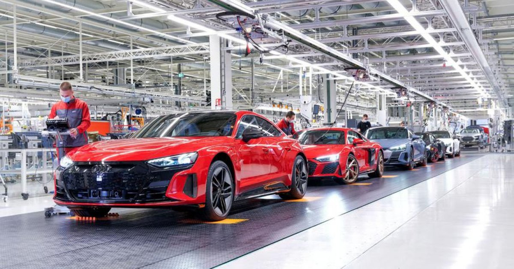
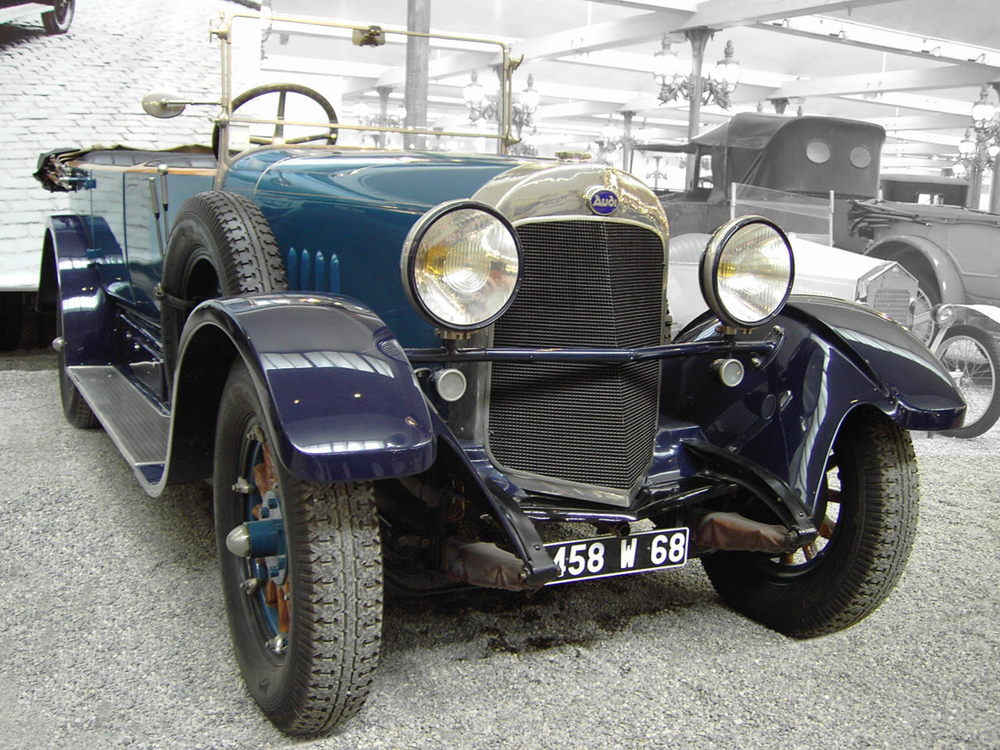

Audi/Ауди
Автомобилите Audi
се произвеждат освен в заводите в Инголщат (37 400 заети),
Некарзулм (15 163 заети), и в автомобилните заводи в
Дьор (Унгария) (10 337 заети) и Брюксел (Белгия)
(2548 заети). Коли с
марката Audi се произвеждат и в заводите Volkswagen в Братислава (Словакия) и
в Калуга (Русия), които си сътрудничат със заводите на „Шкода
Ауто“ в Аурангабад (Махаращра, Индия) и със завода за седалки
в Марторел (Испания). В Азия Audi се прави също в
INDOMOBIL/Garuda Mataram Motor в Джакарта (Индонезия) и
във Фошан и Чанчун (Китай).Произходът на Audi може да
бъде проследен до началото на 20 век. На 14
ноември 1899 г. Аугуст Хорх основава фирмата за производство
на автомобили August Horch & Cie. През 1909 г.,
след пререкания с надзорния съвет, той напуска и на 16 юли
1909 г. основава нова фирма – August Horch
Automobilwerke GmbH със седалище в Цвикау.След като губи
съдебния спор за правата над марката Horch, Хорх променя
названието на фирмата си и от 25 април 1910 г. тя се казва Audi
Automobilwerke GmbH. Противно на разпространеното
мнение, че Audi е съкращение на Auto Union Deutschland
Ingolstadt, името има съвсем друг произход. След като губи
правата над марката, Хорх провежда среща със своя познат
Франц Фикенчер, на която обсъждат идеи за ново име на
фирмата.
German Cars